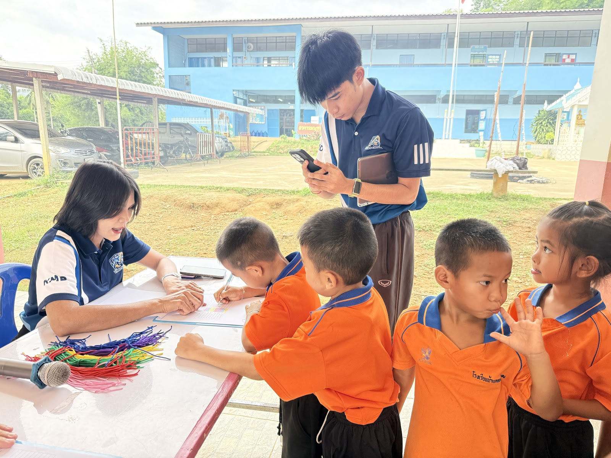
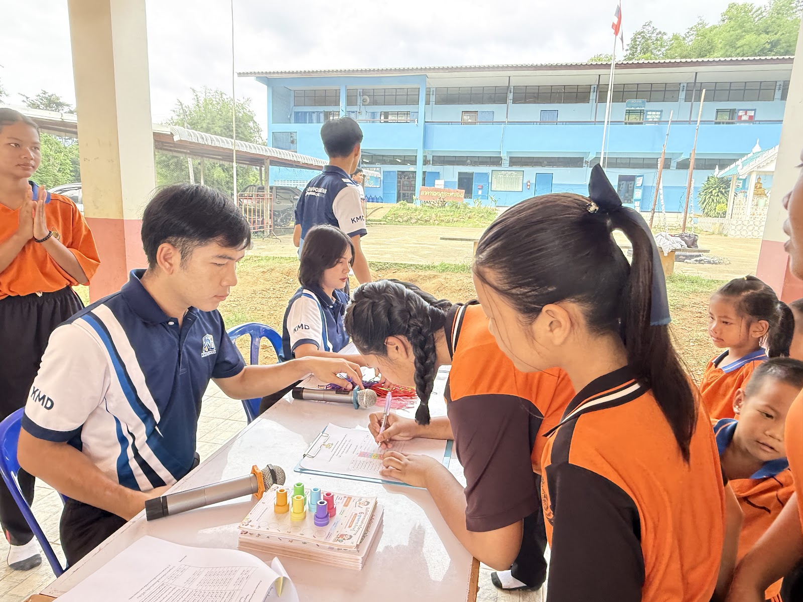
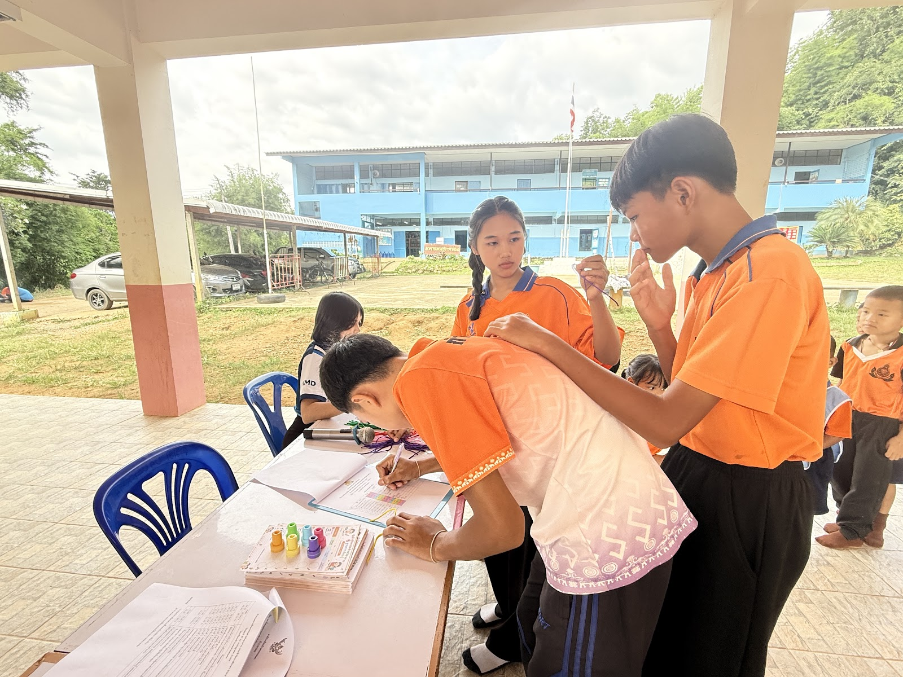
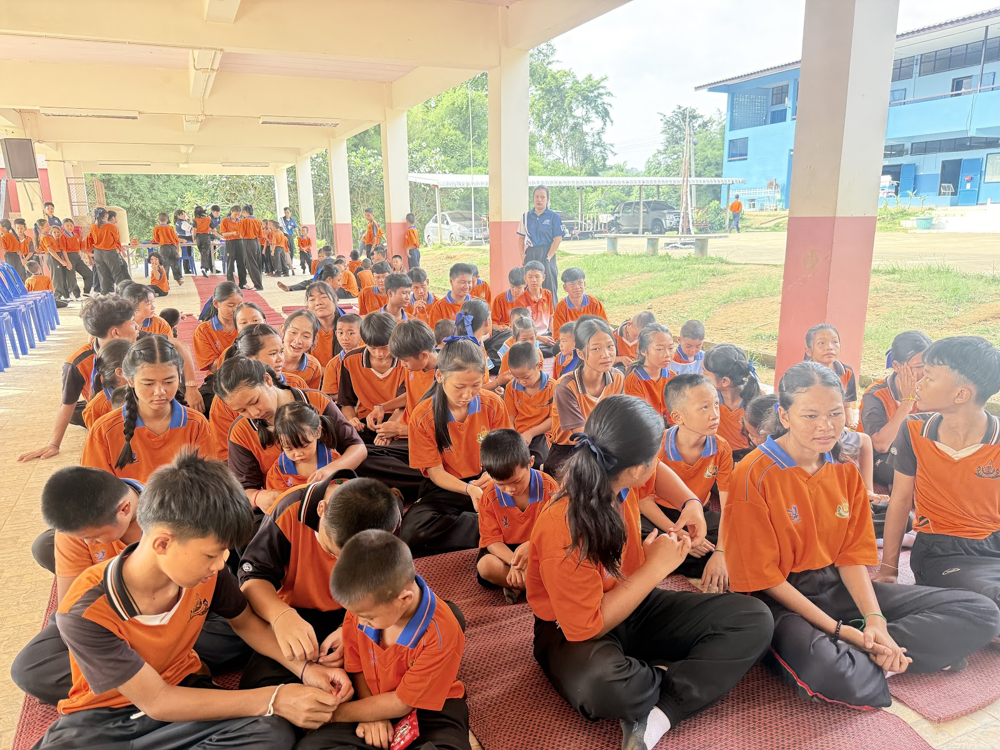
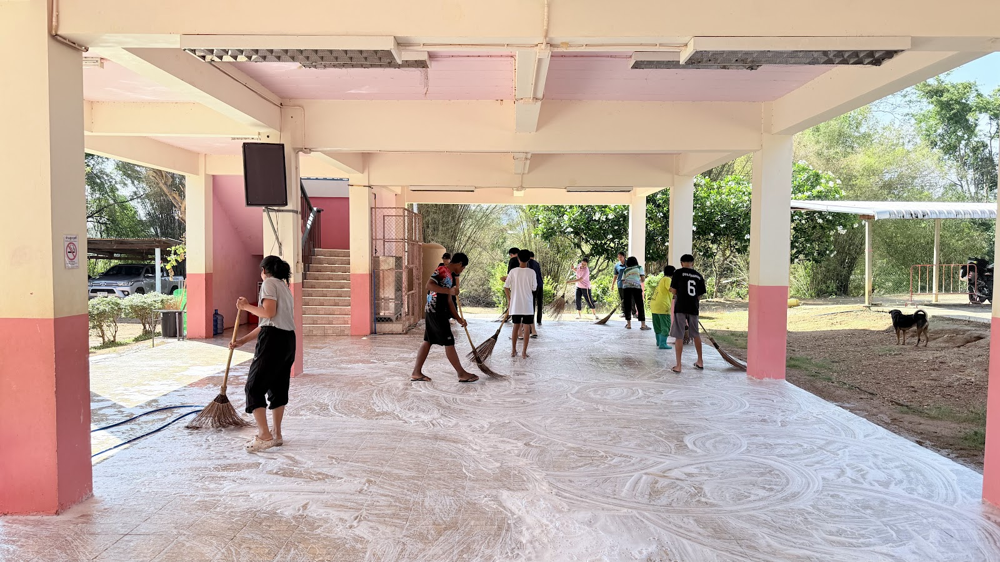
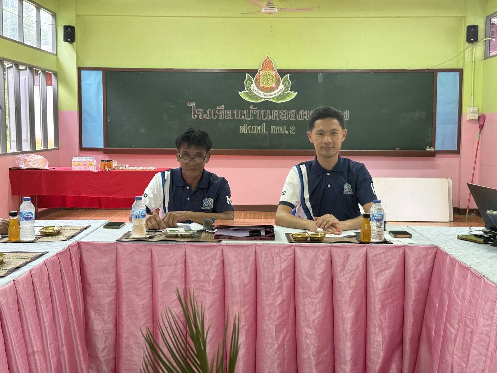

ผลการปฏิบัติงานตามมาตรฐานตำแหน่ง ๑๕ ตัวชี้วัด
การประเมินประสิทธิภาพและประสิทธิผลการปฏิบัติงานตามเกณฑ์ ว 9/2564 (๖๐ คะแนน)
การสร้างและหรือพัฒนาหลักสูตร
วิเคราะห์หลักสูตรแกนกลางการศึกษาขั้นพื้นฐาน พ.ศ. 2551 (ฉบับปรับปรุง 2560) สาระเทคโนโลยีและกลุ่มการงานอาชีพ จัดทำคำอธิบายรายวิชาและโครงสร้างรายวิชา 7 รายวิชา (ว11102, ว12102, ว14102, ว15102, ว21102, ว22102, ว23102) และปรับปรุงหน่วยการเรียนรู้ "หนูน้อยไอทีกับเมาส์วิเศษ" สำหรับ ป.1 ให้เหมาะสมกับพัฒนาการกล้ามเนื้อมือของเด็กเล็ก

การออกแบบและการจัดกิจกรรมการเรียนรู้ (Active Learning)
ออกแบบแผนการจัดการเรียนรู้เน้นผู้เรียนเป็นสำคัญ (Learner-Centered) ครบ K-P-A จำนวน 4 แผนบูรณาการ Gamification ครูทำหน้าที่เป็นโค้ช (Coach) คอยจับมือสาธิตการจับเมาส์ ให้นักเรียนฝึกฝนผ่าน Code.org และ Poki Games พร้อมระบบเพื่อนช่วยเพื่อน (Buddy System) สร้างความมั่นใจให้แก่นักเรียนทุกคน

การสร้างและหรือพัฒนาสื่อ นวัตกรรม เทคโนโลยี และแหล่งเรียนรู้
พัฒนาสื่อเกมคอมพิวเตอร์ Canva Games, Poki.com, Code.org Pre-reader, แบบทดสอบออนไลน์ Quizizz พร้อมระบบ Leaderboard และสร้างเว็บไซต์คลังบทเรียนออนไลน์ "KruJames Learning Space" บนระบบ Google Sites เพื่อให้นักเรียนและผู้ปกครองเข้าถึงสื่อการเรียนรู้ได้ตลอด 24 ชั่วโมง

การวัดประเมินผล และการวิจัยแก้ปัญหาผู้เรียน (CAR)
ประเมินตามสภาพจริงด้วยเกณฑ์รูบริกส์ 4 ระดับ ครอบคลุม 4 ทักษะการใช้เมาส์ พร้อม Immediate Feedback ทันที และดำเนินการทำวิจัยในชั้นเรียน (Classroom Action Research) พบว่า คะแนนหลังเรียน (17.78) สูงกว่าก่อนเรียน (8.44) อย่างมีนัยสำคัญทางสถิติที่ระดับ .05 (t = 17.58, p < .001) และนำผลเข้าสู่วง PLC 13 ชั่วโมง

การจัดบรรยากาศ และการอบรมคุณลักษณะอันพึงประสงค์
ปรับปรุงห้องคอมพิวเตอร์ สายไฟเก็บลงรางปลอดภัย 100% บรรยากาศเชิงบวก อบอุ่น ให้กำลังใจ จัดบอร์ดนิทรรศการ Digital Citizenship และบอร์ด Hall of Fame ปลูกฝังวินัยการดูแลอุปกรณ์ และการมีน้ำใจช่วยเหลือเพื่อนร่วมชั้น ส่งผลให้นักเรียนมีความพึงพอใจสูงถึง 96.5%

ระบบข้อมูลสารสนเทศ และการดูแลช่วยเหลือนักเรียน ม.3 (100%)
จัดทำ ปพ.5 ดิจิทัล บันทึกคะแนนและเวลาเรียนแม่นยำ 100% จัดทำแบบวิเคราะห์ผู้เรียนรายบุคคล ในฐานะครูประจำชั้น ม.3 ได้ลงพื้นที่ออกเยี่ยมบ้านนักเรียนครบ 100% คัดกรองแบบประเมิน SDQ ประสานขอรับเงินทุนการศึกษาปัจจัยพื้นฐานนักเรียนยากจนพิเศษ (กสศ.) ครบทุกคน และแนะแนวศึกษาต่อ 100%

งานวิชาการ/พัสดุ/ICT และโครงการสัมพันธ์ชุมชน 2568
ปฏิบัติหน้าที่หัวหน้าฝ่าย ICT (ระบบเน็ตเวิร์กพร้อมใช้งาน 98.5%) และเจ้าหน้าที่งานพัสดุตามระเบียบกระทรวงการคลังฯ พ.ศ. 2560 ได้รับแต่งตั้งเป็นประธานโครงการส่งเสริมความสัมพันธ์ชุมชน ปีการศึกษา 2568 จัดประชุมผู้ปกครอง 80 คน ความพึงพอใจ 86.25% ประหยัดงบประมาณคงเหลือส่งคืน 500 บาท (ศธ.04024.137/บค002/2569)

การพัฒนาตนเอง (AI สสวท. 28 ชม.), PLC 13 ชม. และการนำมาใช้
ผ่านการอบรมหลักสูตร AI for Teachers (ปัญญาประดิษฐ์เพื่อการศึกษา) สสวท. รวม 28 ชั่วโมง (ม.ต้น 20 ชม. + ประถมปลาย 8 ชม.) และหลักสูตรพัฒนาตนเองรวม 28 หลักสูตร (>35 ชั่วโมง) เข้าร่วมชุมชนแห่งการเรียนรู้ทางวิชาชีพ (PLC) โรงเรียนบ้านคลองมดแดง 13 ชั่วโมง และนำองค์ความรู้มาพัฒนานวัตกรรม Gamification ป.1 และผลิตสื่อ 62 รายการ